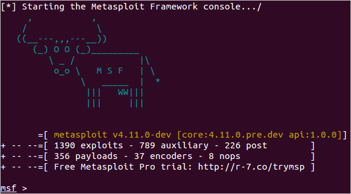

The Metasploit Framework is a Ruby-based, modular penetration testing platform that enables you to write, test, and execute exploit code. The Metasploit Framework contains a suite of tools that you can use to test security vulnerabilities, enumerate networks, execute attacks, and evade detection. At its core, the Metasploit Framework is a collection of commonly used tools that provide a complete environment for penetration testing and exploit development.
If you're a Windows user, launching MSFconsole is really easy. Go to the Start menu and choose All Programs > Metasploit > Framework > Metasploit Console. If you prefer to run the console from the command line, open a terminal and run the following commands: